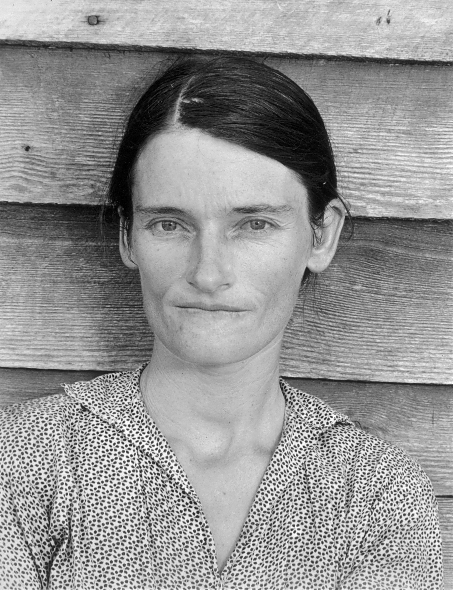
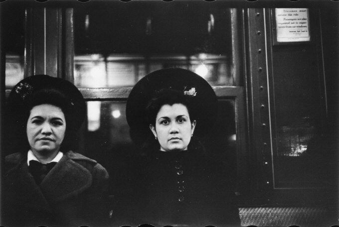

Walker Evans è stato un fotografo statunitense. Nacque a St. Louis, Missouri da Jessie (nata Crane) e Walker Evans. Passò la sua giovinezza a Toledo in Ohio, a Chicago e a New York City. Frequentò Il "Loomis Institute" e la "Mercersburg Academy", e si laureò alla "Phillips Academy in Andover, Massachusetts nel 1922". Dopo un anno a Parigi nel 1926, tornò a New York, lavorando per una società di agenti di cambio a Wall Street, fino al 1929
Evans si avvicinò alla fotografia nel 1928. Già nel 1930 pubblicò tre fotografie del pone di Brooklyn nel libro di poesie The Bridge di Hart Crane, suo amico. Nel 1931 fece una serie di fotografie ad alcune case vittoriane nella zona di Boston, sponsorizzato da un altro suo amico, Lincoln Kirstein.
Tra Maggio e Giugno del 1933 Evans andò per due settimane, su commissione di Lippincott, ad eseguire scatti alla Cuba sottomessa alla dittatura di Gerardo Machedo. Lì incontrò Ernest Hemingway, dove "trascorse magnifiche serate a bere con lui". Lo scrittore si trovò così bene con Evans, a tal punto da pagargli di tasca sua un'ulteriore settimana a Cuba. Andò via da Cuba, tememndo che le sue fotografie potessere essere confiscate dal governo cubano, e ne lascio ben 46 ad Hemingway. Queste foto sono state solamente scoperte e messe in mostra nel 2002.
 Nel 1935 Evans accettò una campagna fotografica a lungo termine per Il "Resettlement Administration" (RA) in West Virginia ed in Pennsylvania. Nell'estate del 1936, venne mandato con lo scrittore James Agee ad Hale Country, Alabama, per for una storia di futura pubblicazione. Qui, le testimonianza fotografica di Evans sulle storie vissute con tre famiglie bianche nel sud Alabama venne pubblicata e narrata nel libro "Let Us Now Praise Famous Men", la sua opera più famosa. Viene considerata un ottimo ritratto della povertà rurale dovuta alla Grande Depressione.
Curiosità: Al loro arrivo, Evans ed il suo collega vennero identificati come "agenti sovietici" e guardati con sospetto. In occasione del 75° anniversario dalla pubblicazione, la società che commissionò Evans ritornò ad Hale Country, per intervistare i discendenti delle famiglie; tutti erano "ancora arrabbiati" con Evans, poichè aveva mostrato le famiglie sotto una cattiva luce, facendoli sembrare tutti ignoranti
Evans continuò a lavorare per La FSA (Farm Security Administration) fino al 1938, quando il MoMA presentò una esibizione fotografica su di lui, la prima dedicata ad un fotografo. Nello stesso anno Evans, con una camera nascosta nel suo cappotto cominciò a scattare foto di nascosto ai passeggeri della Metropolitana di New York, un luogo dove, secondo il fotografo, "La guardia è abbassata e la maschera è calata. [...] Il viso della gente è nudo in metropolitana". Questo progetto è diventato poi un libro pubblicato nel 1966 e intitolato "Many Are Called" che raccoglie emozioni e sguardi diversi che spaziano dalla noia, alla rabbia, dalla curiosità alla felicità passando per la felicità e la speranza. Uno spaccato di quotidianità dell'animo umano. 
Infine, cominciò a lavorare al Time, e divenne un professore di fotografia alla Yale University. Divenne uno dei primi ad utilizzare la Camera Istantanea Polaroid SX-70, ottenendo persino film senza limiti dall'azienda.
Morì nel suo appartamento a New Haven, Connecticut nel 1975. L'ultima persona a parlargli fu Hank O'Neal, suo collaboratore per un nuovo progetto, "A Vision Shared". O'Neal scoprì della sua morte solamente il giorno dopo.
L'eredità di Evans fu presa dal MoMA, diventando l'unico possessore dei diritti di ogni tipo di lavoro di Walker Evans. Tranne un migliaio di di negativi donati alla Libreria del Congresso, di dominio pubblico.
Evans venne inserito nella "St. Louis Walk of Fame" nel 2000.